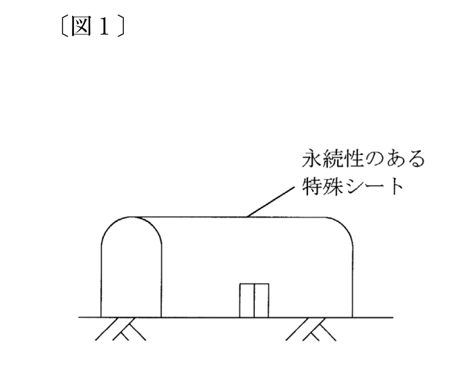
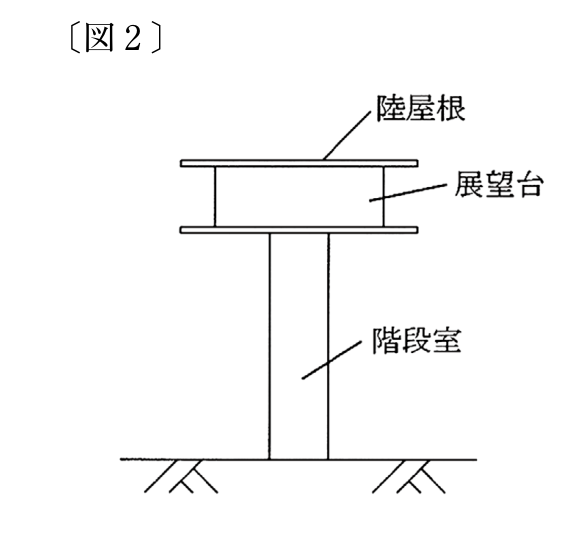

公衆用道路上に屋根覆いを施したアーケード付街路のうち、その周辺が店舗に囲まれており、かつ、アーケードを有する部分に限り、建物として登記することができる。
解答：×
アーケード付街路は、建物として取り扱わないものに名指しされている。
準則77条2号エが「アーケード付街路（公衆用道路上に屋根覆いを施した部分）」を挙げ、2号イやウと違ってただし書による例外を付けていない。周囲が店舗に囲まれていても、その下は誰でも通れる公衆用道路で、周壁による区画がない。
根拠規則111条準則77条2号エ
出典：法務省 令和5年度 土地家屋調査士試験を加工して作成
上部が倉庫として利用されている寺院の山門であって、当該倉庫部分が周壁を有して外気と分断されているものであっても、建物として登記することはできない。
解答：×
周壁で外気を分断し倉庫として使えるなら、建物として登記できる。
寺院の山門であることを理由に建物として取り扱わないものとする規定はない。
規則111条は、屋根及び周壁又はこれらに類するものを有し、土地に定着し、目的とする用途に供し得る状態にあることを求めている。山門であっても、上部が周壁で囲まれて倉庫として使える状態にあるなら、この三つを満たす。準則77条2号にも山門を除く定めはない。
根拠規則111条
出典：法務省 令和5年度 土地家屋調査士試験を加工して作成
次の〔図1〕のとおり、主たる部分の構成材料が鉄骨であり、屋根及び周壁が永続性のある膜構造の塩化ビニールの特殊シートで覆われた建造物は、建物として登記することができる。

〔図〕
解答：○
永続性のあるシートで覆われた鉄骨の建造物は建物になる。
屋根及び周壁又はこれらに類するものがあればよい（規則111条）。永続性のある膜構造のシートはこれに当たる。
根拠規則111条
出典：法務省 令和5年度 土地家屋調査士試験を加工して作成
次の〔図2〕のとおり、最上部が屋根及び周壁を有する展望台となっており、当該展望台の下部が鉄筋コンクリートを主たる構成材料として建築された階段室となっている場合には、当該展望台を建物として登記することができる。

〔図〕
解答：○
階段室で支えられた展望台は、建物として登記できる。
建物は、屋根及び周壁又はこれらに類するものを有し、土地に定着した建造物で、その用途に供し得る状態にあるもの（規則111条）。屋根と周壁のある展望台が階段室を通じて土地に定着し、展望台として使える状態なら、建物として登記できる。
根拠規則111条
出典：法務省 令和5年度 土地家屋調査士試験を加工して作成
屋根及び外壁があり、内部に車を格納する回転式のパーキング機械が設置されているタワー状の立体駐車場は、建物として登記することはできない。
解答：×
屋根と外壁があり車を格納できるなら、建物として登記できる。
規則111条が求める三つを満たしている。中に機械が入っていることは、その建物の使われ方を示すだけで、建物であることを妨げない。準則77条2号イが除く「機械上に建設した建造物」は、機械の上に載っているものを指し、機械を中に納めた建造物とは別である。
根拠規則111条準則77条2号イ
出典：法務省 令和5年度 土地家屋調査士試験を加工して作成
解説は、条文・通達・判例の原典に当たって書いたものです。根拠として挙げた条文はリンク先でそのまま読めます。